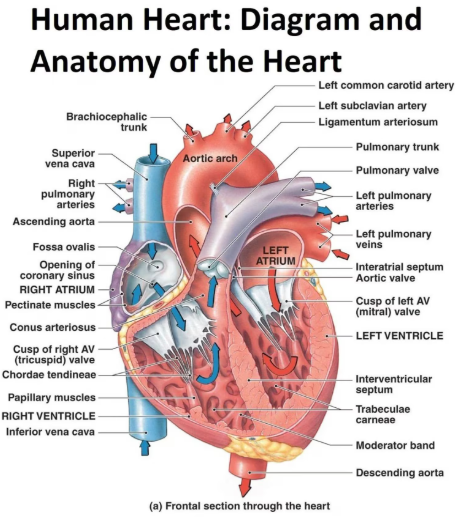
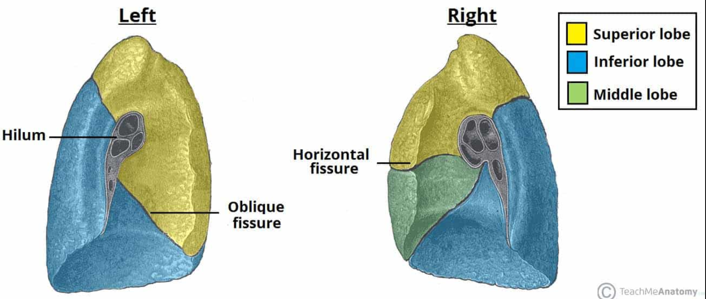
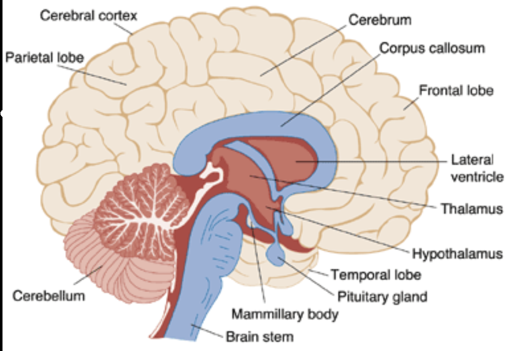
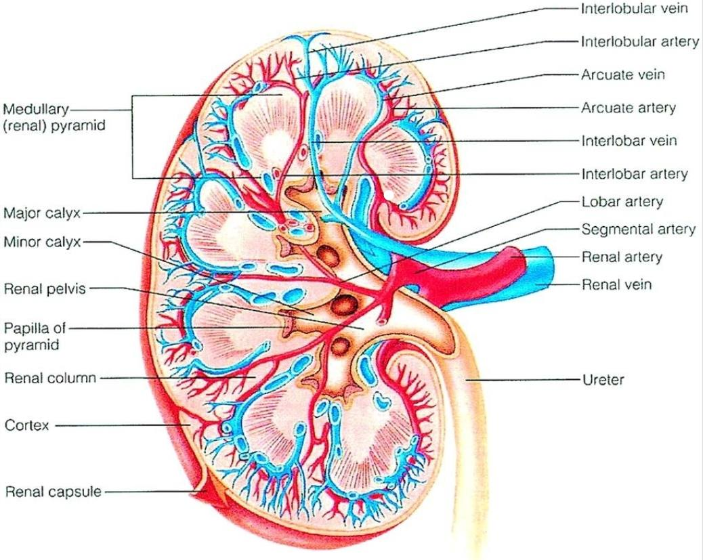
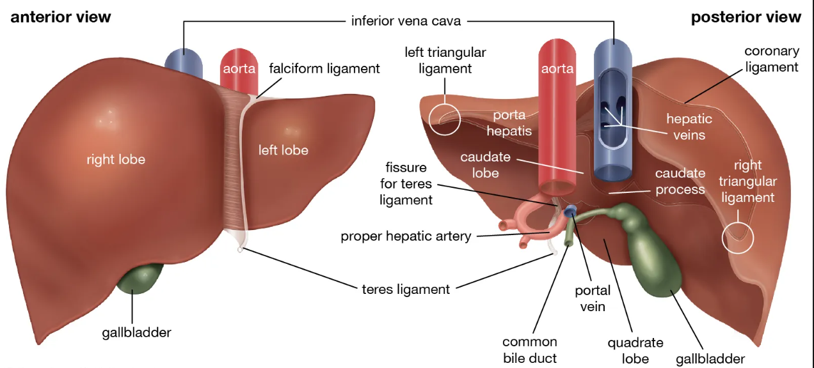
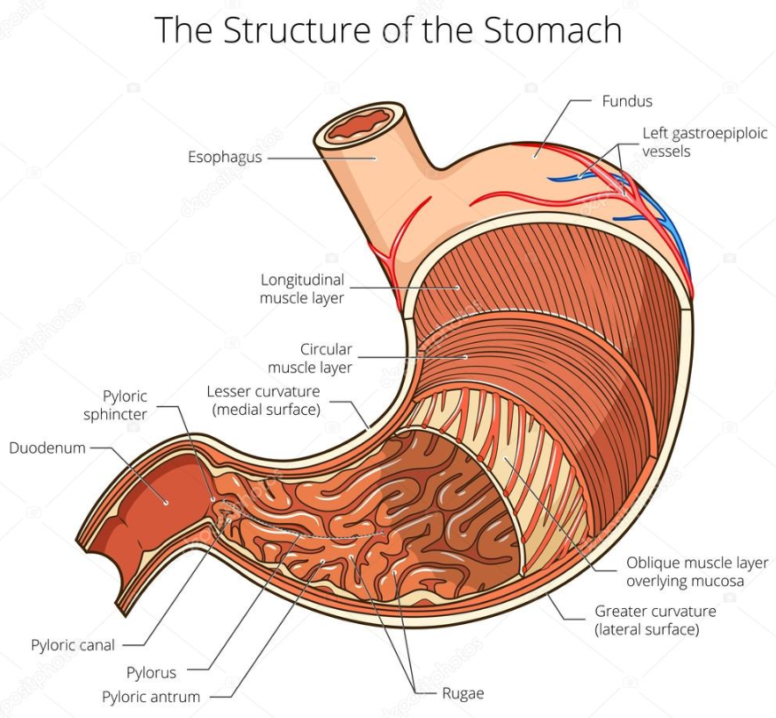
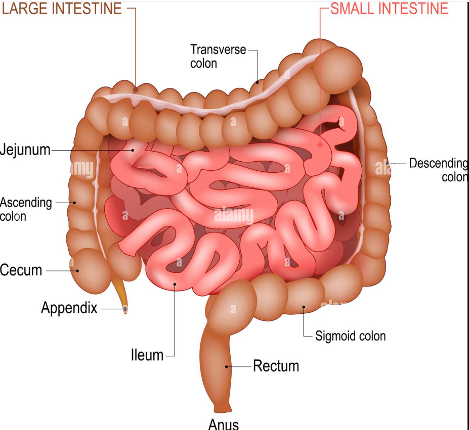
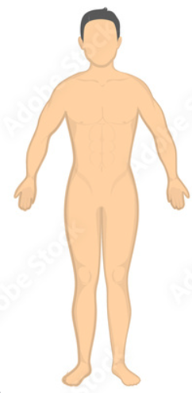
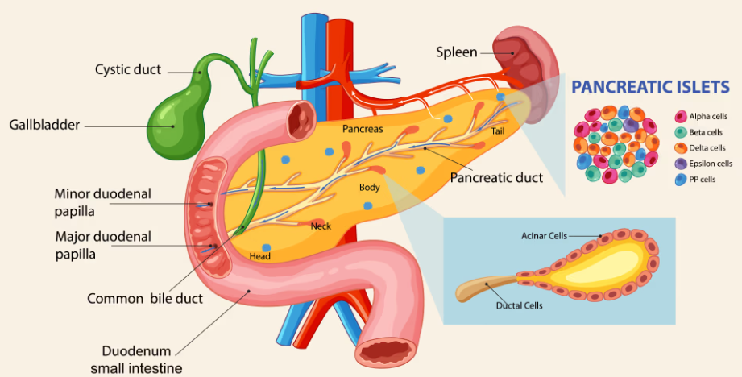
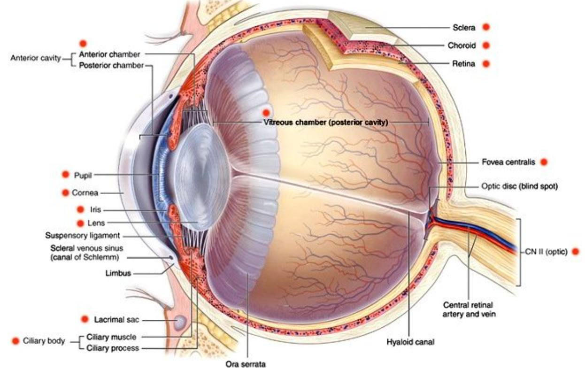

Organs are specialized structures that perform vital functions, each made of different tissues working together.
The heart is a muscular organ that continuously pumps blood through the circulatory system. It ensures oxygen and nutrients reach every cell while removing waste products. Its rhythmic contractions sustain life and adapt to the body’s needs during rest or activity.

The lungs are spongy organs responsible for gas exchange. They bring oxygen into the blood and expel carbon dioxide. Their alveoli provide a large surface area for efficient breathing.

The brain is the control center of the body. It processes information, coordinates movement, stores memory, and regulates emotions. It integrates signals from the senses and directs responses.

The kidneys filter blood to remove waste and maintain fluid balance. They regulate electrolytes, blood pressure, and produce hormones essential for red blood cell formation.

The liver is the largest internal organ. It processes nutrients, detoxifies harmful substances, stores glycogen, and produces bile for fat digestion. It plays a central role in metabolism.

The stomach is a muscular sac that digests food mechanically and chemically. It secretes acid and enzymes to break down proteins and churns food into chyme for further digestion.

The intestines absorb nutrients and water. The small intestine digests and absorbs food, while the large intestine absorbs water and forms feces. They are vital for nutrient supply and waste removal.

The skin is the body’s largest organ and protective barrier. It prevents infection, regulates temperature, and senses touch, pressure, and pain. It also helps in vitamin D synthesis.

The pancreas is both an endocrine and exocrine gland. It produces digestive enzymes and hormones like insulin and glucagon, regulating blood sugar and aiding digestion.

The eyes are complex sensory organs that allow vision. They detect light, adjust focus, and regulate the amount of light entering through the pupil. The retina converts light into electrical signals, which are sent to the brain for interpretation. Eyes also help maintain balance and coordination by working with other senses.

Organs are essential components of living beings, each performing specialized tasks. The heart pumps blood, lungs exchange gases, the brain controls body functions, kidneys filter waste, the liver processes nutrients, the stomach and intestines digest food, the skin protects the body, the pancreas regulates digestion and blood sugar, and the eyes provide vision. Each organ is made up of different tissues — epithelial, connective, muscle, and nervous — working together harmoniously.